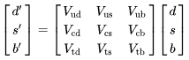
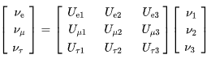

About
Hello I'm Noah Grethen :). This is my personal website where I plan to keep some cool stuff. I'm from Minnesota and am really interested in physics, Japan, and Russia.
Here is my linkedin and email: linkedin and ngrethen@uchicago.edu
Resources
I will update this area with resources/books on topics that interest me (like things I've read, want to read, ...) along with some personal notes, serving mainly the purpose as a bit of an archive.
2. QFT/Relativistic Quantum Mechanics
4. Convex Analysis/Optimization
As I'm interested in both Russia and Japan, I would also like to read more up on their relations and ties (in particular, read up on the Russo-Japanese war, Sakhalin, and the Kuril Islands...)
Projects
I will try to put project stuff here. One idea is to make a "Experimental Minimum" for experimental physicists. There is also research stuff.
University of Tokyo Summer Research Internship Project (UTRIP 2023): pdf
Japanese-English Physics and Math Terms Project: pdf
Russian-English Physics and Math Terms Terms Project: pdf
(mostly) Physics Quotes: here
Quotes
If your experiment needs statistics, you ought to have done a better experiment.- Rutherford
Two operators, both alike in state functions,
In fair bases, where we lay our scene,
From ancient grudge break new mutiny...
Two operators unlike in eigenvalues
Yet star-crossed lovers commute.
Henceforth space by itself, and time by itself, are doomed to fade away into mere shadows, and
only a kind of union of the two will preserve an independent reality.
― Hermann Minkowski
If you tell yourself something over and over again, right or wrong, it becomes intuitive. ― Sidney Coleman
The career of a young theoretical physicist consists of treating the harmonic oscillator in ever-increasing levels of abstraction. ― Sidney Coleman
The truth always turns out to be simpler than you thought. ― Richard P. Feynman
The most incomprehensible thing about the world is that it is at all comprehensible. ― Albert Einstein
It often happens that two schoolboys can solve difficulties in their work for one another better than the master can. […] The fellow-pupil can help more than the master because he knows less. The difficulty we want him to explain is one he has recently met. The expert met it so long ago he has forgotten. He sees the whole subject, by now, in a different light that he cannot conceive what is really troubling the pupil; he sees a dozen other difficulties which ought to be troubling him but aren’t. ― C. S. Lewis
Here, the reader will find no narcissstic cry of mathematics for formatics' sake. To the contrary, we physicist-chauvinist-pigs regard mathematics as the mere handmaiden of physics. Flights of mathematical fancy are tolerated only insofar as they are tethered to observable physical phenomena. - Howard Gorgi
Numbers measure size, groups measure symmetry. ― Mark A. Armstrong
No physics course is complete without a lecture on the simple harmonic oscillator - Sidney Coleman
A theorist today is hardly considered respectable if he or she has not introduced at least one new particle for which there is no experimental evidence.
I managed to get a quick PhD, though when I got it I knew almost nothing about physics. But I did learn one big thing: that no one knows everything, and you don't have to.
Точность — поэзия науки. ― Accuracy is the charm of science.
Mr. Faulkner, some of your readers claim they still cannot understand your work after reading it two or three times. What approach would you advise them to adopt? William Faulkner: Read it a fourth time
When I became a student of Pomeranchuk in 1950, I heard from him that the Book of Physics had two volumes: Volume one is “Pumps and Manometers”, volume two is “Quantum Field Theory”. - Lev Okun
QFT is sterile with respect to strong interactions and, like an old soldier, it is destined not to die, but just to fade away. - Geoffrey Chew
The spectrum of the hydrogen atom has proved to be the Rosetta stone of modern physics: once this pattern of lines had been deciphered much else could be understood. — Arthur Schawlow
Oh my God - it's full of harmonic oscillators!
In 1907, Mendeleev died at the age of 72 in Saint Petersburg from influenza, just 6 days short of his 73rd birthday. His last words were to his physician: "Doctor, you have science, I have faith," which is possibly a Jules Verne quote.
Some of you might not be able to see the forest for the trees or even the trees for the leaves. - Sydney Coleman
Numbers prove theories - Hans Bethe
If you don't understand the hydrogen atom, you don't understand anything. - Dyson
My memory for figures, otherwise tolerably accurate, always lets me down when I am counting beer glasses. - Ludwig Boltzmann.
All of physics is either impossible or trivial. It is impossible until you understand it, and then it becomes trivial. - Rutherford
Gentlemen, we have run out of money. It is time to start thinking. - Rutherford
The only possible conclusion the social sciences can draw is: some do, some don't.- Ernest Rutherford
I ask you to look both ways. For the road to a knowledge of the stars leads through the atom; and important knowledge of the atom has been reached through the stars. -Sir Arthur Eddington
An expert is a person who avoids the small errors while sweeping on to the grand fallacy. - Steven Weinberg
Physics
- курс теоретической физики Ландау и Лифшица (по-русски) I hope to read whole series in Russian.
- ゲージ理論入門 I（第２版）（和訳） I plan to read.
- ゲージ理論入門 II（第２版）（和訳 ） I also plan to read after the first book.
QFT/Relativistic Quantum Mechanics
- Relativistic effects in chemistry
- An Introduction to Spontaneous Symmetry Breaking (Aron J. Beekman, Louk Rademaker, Jasper van Wezel)
- https://arxiv.org/abs/hep-th/0602178 and https://arxiv.org/abs/2306.05395 and related material
- EFT stuff. https://arxiv.org/abs/1804.05863
Medical Physics
Some medical physics stuff. I dabbled a little in the idea of considering medical physics for graduate school and possibly then a career. Now I'm not too keen on that, but I still would like to read into the field here and there.
- Medical Imaging Signals and Systems - Prince and Links. The text used for the undergraduate medical physics course at UChicago. I went through a fair bit of the text but will probably review it again sometime.
- Principles of Computerized Tomographic Imaging - Kak and Slaney.
Convex Analysis/Optimization
A neat area of mathematics with useful applications (like in medical physics).
- Convex Analysis - Rockafellar, R. Tyrrell (1997). Plan to read.
- Convex Optimization – Boyd and Vandenberghe. Started reading.
Japan
I've been really interested in Japan for a while now, trying to learn the language on my own for instance. I passed the JLPT N2.
Meanwhile, the international relations and cultural exchange between the US and Japan are also something I feel are quite important. One way I've tried to act on this is that throughout my undergraduate studies, I've been working as an intern at the Japan America Society of Chicago. You should check it out! https://jaschicago.org/
Russia
I've been studying Russian at college.
I'm also interested in the former Soviet Union republics beyond just the RSFSR. It would also be cool to research and learn more about soviet emblems, symbolism, monuments, etc.
Kaon Physics
Kaon stuff (the focus of the Yau Wah physics research group at UChicago)
HiggsTan KOTO: linked

Neutrino Physic
Neutrino Physics stuff

Digital Design
- https://arxiv.org/abs/1805.03648
- Navabi, Verilog Digital System Design
Book on introducing Verilog HDL. Assumes some digital logic knowledge. I really like it, and it's structured well.
- G. DeMicheli, Synthesis and Optimization of Digital Circuits